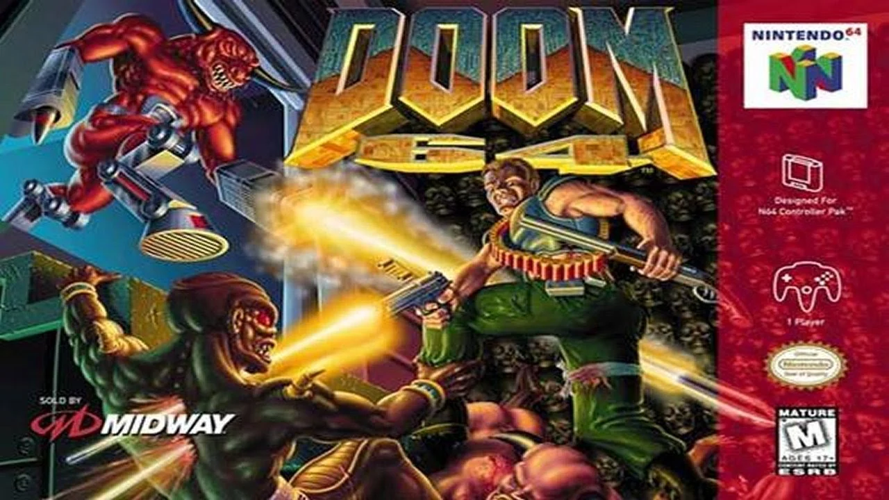

Historia de Doom 64
La trama se centra en los acontecimientos siguientes a los juegos originales de la serie. Una entidad malvada conocida como la Madre Demonio ha sobrevivido y trajo de vuelta a las criaturas muertas en descomposición que el marine una vez mató.
Depende de ti, el único marine espacial sobreviviente, el detener las legiones una vez más.
"Su cansancio era enorme, el precio de encontrar el mal en estado puro. El infierno era un lugar que ningún mortal estaba destinado a experimentar. Médicos militares estúpidos: sus pruebas y tratamientos eran de poca ayuda. Al final, qué importaba, todo fue clasificado y sellado. Las pesadillas continuaron. Demonios, tantos demonios; implacable, fluyendo a través.
Lejos..
La política planetaria estaba clara. Una cuarentena absoluta garantizada por niveles apocalípticos de radiación.
Los pasillos oscuros vacíos permanecen inmóviles, abandonados. Las instalaciones selladas.
Un satélite de retransmisión en el olvido apenas operativo, degradado por años de bombardeos de neutrones, se activa y envía su mensaje final a la Tierra. El mensaje de los satélites era horrible, desde el vacío planetario llegan firmas de energía diferentes a todo lo visto antes.
Se abren los archivos clasificados. Los episodios militares con nombre código 'DOOM' no se completaron en realidad. Una entidad individual con amplios poderes de rejuvenecimiento, enmascarados por los niveles de radiación extremas, escapó de la detección. En ese estado, alteró de manera sistemática la carne en descomposición de los muertos de nuevo en tejido vivo.
Las mutaciones son devastadoras. Los demonios han vuelto aún más fuertes y crueles que antes. Como el único sobreviviente experimentado del episodio DOOM, su comisión se reactiva. Su misión es clara: EXTERMINIO."
||Manual de DOOM 64||

Volver al índice